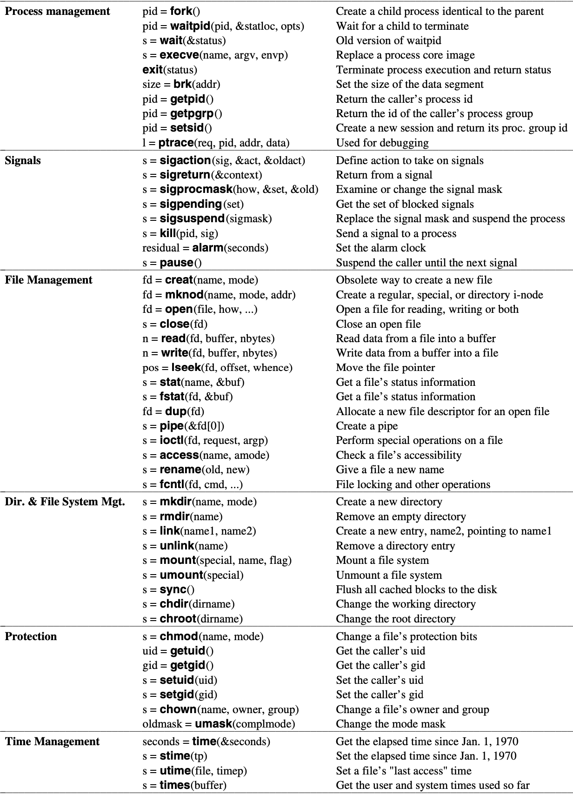
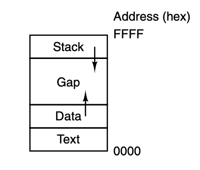
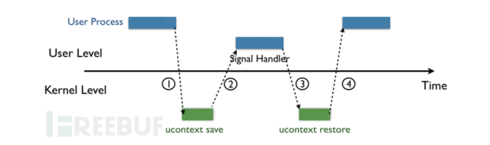
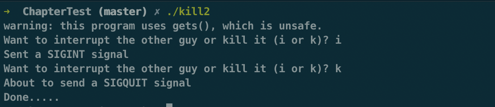
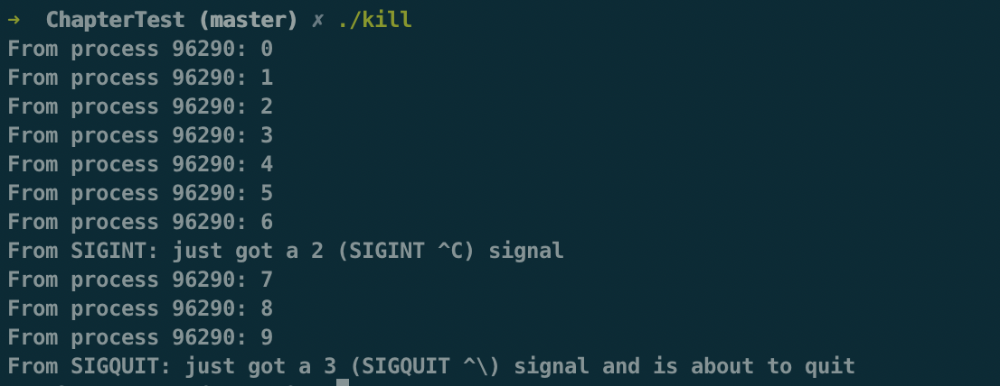

Operating Systerms Design and Implementation Notes
By Jiawei Wang
Shell
In the First Note. We mentioned that: The operating system is
the code that carries out the system calls.
Editors, compilers,
assemblers, linkers, and command interpreters definitely are not part of
the operating system, even though they are important and
useful.
The MINIX 3 command interpreter, called
the Shell.
It is also the primary interface between
a user sitting at his terminal and the operating system, unless the user
is using a graphical user interface.
When any user logs in, a shell is started up. The shell has
the terminal as standard input and standard output (STDIN STDOUT). It
starts out by typing the prompt, a character such as a dollar sign,
which tells the user that the shell is waiting to accept a command. If
the user now types
date
for example, the shell creates a child process and runs the
date program as the child. While the child process is running, the shell
waits for it to terminate. When the child finishes, the shell types the
prompt again and tries to read the next input line.
Example:
Considering you input that command in shell:
cp file1 file2Used to copy file1 to file2. After the shell has forked, the
child process locates and executes the file cp and passes to it the
names of the source and target files.
The main
program of cp (and main program of most other C programs) contains the
declaration:
main(argc, argv, envp)- where argc is a count of the number of items on the command line, including the program name. For the example above, argc is 3.
- The second parameter, argv, is a pointer to an array. Element i of that array is a pointer to the i-th string on the command line. In our example, argv[0] would point to the string ‘‘cp’’, argv[1] would point to the string ‘‘file1’’, and argv[2] would point to the string ‘‘file2’’.
- The third parameter of main, envp, is a pointer to the environment, an array of strings containing assignments of the form name=value used to pass information such as the terminal type and home directory name to a program. In Fig. 1-10, no environment is passed to the child, so the third parameter of execve is a zero.
5. System Calls (1)
In a sense, making a system call is like making a special
kind of procedure call, only system calls enter the kernel or other
privileged operating system components and procedure calls do
not.
MINIX 3 has a total of 53 main system
calls:

- 1. Systerm Calls
For Process Management
- fork – create a child process
- waitpid – wait for process to change state
- wait – old wait for process to change state
- execve – execute program
- exit – cause normal process termination
- brk, sbrk - change data segment size
- getpid – get process identification
- getpgrp – get process group id
- ptrace – process trace
- 2. Systerm Calls for Signaling
1. Systerm Calls For Process Management
fork – create a child process
fork( )
creates a new process by duplicating the calling process.
The new
process is referred to as the child process. The calling process is
referred to as the parent process.
* After the
fork, the original process and the copy (the parent and child) go their
separate ways. * In most cases, after a fork, the child
will need to execute different code from the parent *
On success: the PID of the child process is returned in the
parent, and 0 is returned in the child. * On failure,
-1 is returned in the parent, no child process is created, and errno is
set appropriately.
waitpid – wait for process to change state
waitpid(pid_t
pid, int wstatus(pointer), int options)
To wait for
the child to finish, the parent executes a waitpid system call, which
just waits until the child terminates (any child if more than one
exists). * The First argument(pid) default is -1:
detail see below:

* The Second argument(wstatus) is a pointer.
which point to the exit value of the child process(default is
Null) * The Third argument default is 0. For the detail
you can check this website
* In normal case: returns the process ID of the child whose
state has changed or -1
wait – old wait for process to change state
wait
(wstatus(pointer))
The waitpid call replaces the
previous wait call, which is now obsolete but is provided for reasons of
backward compatibility.
/* example */
#include <stdlib.h>
#include <unistd.h>
#include <sys/types.h>
#include <sys/wait.h>
main()
{
pid_t pid;
int status, i;
if(fork() == 0)
{
printf("This is the child process. pid =%d\n", getpid());
exit(5);
}
else
{
sleep(1);
printf("This is the parent process, wait for child...\n");
pid = wait(&status);
i = WEXITSTATUS(status);
printf("child's pid =%d . exit status=^d\n", pid, i);
}
}output:
This is the child process. pid =67313
This is the parent process, wait for child...
child's pid =67313 . exit status=^dIf we remove the sleep(1) in the parent process, the output will be:
This is the parent process, wait for child...
This is the child process. pid =67672
child's pid =67672 . exit status=^dwait() will temporarily stop the execution of
the current process until a signal comes or the child process
ends.
execve – execute program
execve
(command, parameters, env)
In the most general
case, execve has three parameters: the name of the file to be executed,
a pointer to the argument array, and a pointer to the
environment
- There are many different types of exeve for difference use: execl, execlp, execle, execv, execvp, execvpe
- The exec functions return only if an error has occurred. -1 and errno is set to indicate the error.
/*A stripped-down shell */
#define TRUE 1
while (TRUE){ /* repeat forever */
typt_prompt() /* display prompt on the screen */
read_command(command, parameters); /* read input from terminal */
if (folk()!=0){ /* fork off child process */
/*parent code.*/
waitpid(-1, &status, 0); /* wait for child to exit */
}
else{
/*child code.*/
execve(command, parameters, 0); /* execute command */
}
}exit – cause normal process termination
exit
(int status)
The exit function causes normal
process termination and the least significant byte of status (i.e.,
status & 0xFF) is returned to the parent (see wait(2)).
brk, sbrk - change data segment size
brk (void
addr(pointer))
sbrk
(intptr_t increment)
brk and sbrk change the
location of the program break, which defines the end of the process’s
data segment (i.e., the program break is the first location after the
end of the uninitialized data segment)

Processes in
MINIX 3 have their memory divided up into three segments: the text
segment (i.e., the program code), the data segment (i.e., the
variables), and the stack segment.
The data segment grows upward and
the stack grows down-ward. Between them is a gap of unused address
space. The stack grows into the gap automatically, as needed, but
expansion of the data segment is done explicitly by using a system call,
brk, which specifies the new address where the data segment is to
end.
As a convenience for programmers, a library routine sbrk is
provided that also changes the size of the data segment, only its
parameter is the number of bytes to add to the data segment (negative
parameters make the data segment smaller).
getpid – get process identification
getpid (
) returns the process ID (PID) of the calling process.
getpgrp – get process group id
getpgrp
( ) returns the process group ID of the calling process
From
Wikipedia: A process group denotes a collection of one or more
processes. Among other things, a process group is used to control the
distribution of a signal; when a signal is directed to a process group,
the signal is delivered to each process that is a member of the
group.
ptrace – process trace
It is used by debugging programs to control the program being
debugged. It allows the debugger to read and write the controlled
process’ memory and manage it in other ways.
For
more: man7.org
2. Systerm Calls for Signaling
Although most forms of interprocess communication are
planned, situations exist in which unexpected communication is needed.
For example, if a user accidently tells a text editor to list the entire
contents of a very long file, and then realizes the error, some way is
needed to interrupt the editor.
In MINIX 3, the user can hit the
CTRL-C key on the keyboard, which sends a signal to the editor. The
editor catches the signal and stops the print-out. Signals can also be
used to report certain traps detected by the hardware, such as illegal
instruction or floating point overflow. Timeouts are also implemented as
signals.
sigaction – examine and change a signal action
sigaction
(int signum, const struct sigaction act(pointer), struct sigaction
oldact(pointer) )
The sigaction() system call is
used to change the action taken by a process on receipt of a specific
signal
When a signal is sent to a process that has not announced its willingness to accept that signal, the process is simply killed without further ado.
The first argument(int signum) is an integer which direct to a specific signal, detail see below:

signum specifies the signal and can be any valid signal except SIGKILL and SIGSTOP.
The Second arg act is a pointer which to a signal hander program in the storiage
The Third arg oldact is also a pointer like act. Which point to the address stored by the original handler.(If is Null means don’t need to return previous program)
If act is non-NULL, the new action for signal signum is installed from act. If oldact is non-NULL, the previous action is saved in oldact.
After a sigaction call, if a signal of the relevant type is generated (e.g., by pressing CTRL-C), the state of the process is pushed onto its own stack, and then the signal handler is called.
Example:
Instead of providing a function
to catch a signal, the program may also specify the constant SIG_IGN to
have all subsequent signals of the specified type ignored, or SIG_DFL to
restore the default action of the signal when it occurs. The default
action is either to kill the process or ignore the signal, depending
upon the signal. As an example of how SIG_IGN is used, consider what
happens when the shell forks off a background process as a result
of.
command &It would be undesirable for a SIGINT signal (generated by pressing CTRL-C) to affect the background process, so after the fork but before the exec, the shell does
sigaction(SIGINT, SIG_IGN, NULL);and
sigaction(SIGQUIT, SIG_IGN, NULL);To disable the SIGINT and SIGQUIT signals.
sigreturn – return from signal handler and cleanup stack frame
sigreturn
When the signal handling procedure is done, it calls sigreturn
to continue where it left off before the signal passively
Signal handling has been an integral part of UNIX (and
UNIX-like) systems ever since the very first implementation by Dennis
Ritchie in the early 1970s. > Signals are an
extremely powerful mechanism to deliver asynchronous notifications
directly to a process or thread. They are used to kill processes, to
tell them that timers have expired, or to notify them about exceptional
behavior. The UNIX design has spawned a plethora of UNIX-like “children”
of which GNU Linux, several flavours of BSD, Android, iOS/Mac OS X, and
Solaris are perhaps the best known ones in active use today. While each
flavor handles signals in slightly different ways, the different
implementations are all very similar.
- As shown in the figure below, when the kernel delivers a
signal to a process, the process will be temporarily suspended and enter
the kernel(1)
 - Then the kernel saves the corresponding context for the
process and jumps to the previously registered signal handler to process
the corresponding signal(2)
- When the signal handler returns (3), the kernel restores the
previously saved context for the process
- The execution of the final recovery process
(4)
If You want to know more about Signal (System Call). You can
read this Note:
Sigreturn
Oriented Programming Attack Note by Jiawei Wang
signal - ANSI C signal handling
#include <signal.h>
typedef void (*sighandler_t)(int);sighandler_t signal
(int signum, sighandler_t handler)
** signal ( ) sets the disposition of the signal signum to handler, which is either SIG_IGN, SIG_DFL, or the address of a programmer-defined function (a “signal handler”).**
Let’s see an example
program in C to understand:
// default Signal Handler
#include<stdio.h>
#include<signal.h>
int main()
{
signal(SIGINT, handle_sigint);
while (1)
{
printf(“hello world\n”);
sleep(1);
}
return 0;
}Output : Print hello world infinite times. If user presses ctrl-c to terminate the process because of SIGINT signal sent and its default handler to terminate the process.
hello world
hello world
hello world
terminated User Defined Signal Handlers:
// default Signal Handler
#include<stdio.h>
#include<signal.h>
// Handler for SIGINT, caused by
// Ctrl-C at keyboard
void handle_sigint(int sig)
{
printf("Caught signal %d\n", sig);
}
int main()
{
signal(SIGINT, handle_sigint);
while (1) ;
return 0;
}Output :
^CCaught signal 2 // when user presses ctrl-c
^CCaught signal 2kill – terminate / send signal to a process
kill
[-signal|-s signal|-p] [-q value] [-a] [–timeout milliseconds signal]
[–] pid|name…
If no signal is specified, the TERM signal is sent. The
default action for this signal is to terminate the process.
Getting back to the example of background processes used above,
suppose a background process is started up, but later it is decided that
the process should be terminated.
For the detail of the First argument. Please check that Link
The Second argument pid or name is that:

Another Use of kill syscall is that kill can send message
between two processes:
To send a signal to another
process, we need to use the Unix system kill(). The
following is the prototype of kill():
int kill(pid_t pid, int sig)Send
signal to a process * System call kill() takes two
arguments. The first, pid, is the process ID you want to send a signal
to, and the second, sig, is the signal you want to send. Therefore, you
have to find some way to know the process ID of the other
party. * If the call to kill() is successful, it
returns 0; otherwise, the returned value is negative.
Here is an Example of kill used in send
signal:
/* ---------------------------------------------------------------- */
/* PROGRAM process-a.c: */
/* This program demonstrates the use of the kill() system call. */
/* This process must run before process-b.c because it creates a */
/* shared memory segment for storing its process id. */
/* ---------------------------------------------------------------- */
#include <stdio.h>
#include <sys/types.h>
#include <signal.h>
#include <sys/ipc.h>
#include <sys/shm.h>
/* ---------------------------------------------------------------- */
/* signal handler function prototypes */
/* ---------------------------------------------------------------- */
void SIGINT_handler(int); /* for SIGINT */
void SIGQUIT_handler(int); /* for SIGQUIT */
/* ---------------------------------------------------------------- */
/* global variable */
/* ---------------------------------------------------------------- */
int ShmID; /* shared memory ID */
pid_t *ShmPTR; /* shared memory pointer */
/* ---------------------------------------------------------------- */
/* main program starts here */
/* ---------------------------------------------------------------- */
void main(void)
{
int i;
pid_t pid = getpid();
key_t MyKey;
if (signal(SIGINT, SIGINT_handler) == SIG_ERR) {
printf("SIGINT install error\n");
exit(1);
}
if (signal(SIGQUIT, SIGQUIT_handler) == SIG_ERR) {
printf("SIGQUIT install error\n");
exit(2);
}
MyKey = ftok(".", 's'); /* create a shared memory segment*/
ShmID = shmget(MyKey, sizeof(pid_t), IPC_CREAT | 0666);
ShmPTR = (pid_t *) shmat(ShmID, NULL, 0);
*ShmPTR = pid; /* save my pid there*/
for (i = 0; ; i++) {
printf("From process %d: %d\n", pid, i);
sleep(1);
}
}
/* ---------------------------------------------------------------- */
/* FUNCTION SIGINT_handler: */
/* SIGINT signal handler. It only reports that a Ctrl-C has */
/* been received. Nothing else. */
/* ---------------------------------------------------------------- */
void SIGINT_handler(int sig)
{
signal(sig, SIG_IGN);
printf("From SIGINT: just got a %d (SIGINT ^C) signal\n", sig);
signal(sig, SIGINT_handler);
}
/* ---------------------------------------------------------------- */
/* FUNCTION SIGQUIT_handler: */
/* SIGQUIT signal handler. When SIGQUIT arrives, this handler */
/* shows a message, removes the shared memory segment, and exits. */
/* ---------------------------------------------------------------- */
void SIGQUIT_handler(int sig)
{
signal(sig, SIG_IGN);
printf("From SIGQUIT: just got a %d (SIGQUIT ^\\) signal"
" and is about to quit\n", sig);
shmdt(ShmPTR);
shmctl(ShmID, IPC_RMID, NULL); /*shared memory control*/
/*quit*/
exit(3);
}If we run this program above. Obviously. It should be like
that:
From process 92982: 0
From process 92982: 1
From process 92982: 2
From process 92982: 3
From process 92982: 4
From process 92982: 5
From process 92982: 6
From process 92982: 7
From process 92982: 8
From process 92982: 9
From process 92982: 10
From process 92982: 11
From process 92982: 12
From process 92982: 13
From process 92982: 14
From process 92982: 15
.......Iteration ForeverIf we press Ctrl-C. It should be like that:
From process 92982: 15
From SIGINT: just got a 2 (SIGINT ^C) signal
From process 92982: 16
.......Iteration ForeverIf we press Ctrl- (SIGQUIT):
From SIGQUIT: just got a 3 (SIGQUIT ^\) signal and is about to quit
(No more interation)The Program runs as expected. Now. Let’s see another
program:
/* ---------------------------------------------------------------- */
/* PROGRAM process-b.c: */
/* This program demonstrates the use of the kill() system call. */
/* This process reads in commands and sends the corresponding */
/* to process-a. Note that process-a must run before process-b for */
/* process-b to retrieve process-a's pid through the shared memory */
/* segment created by process-a. */
/* ---------------------------------------------------------------- */
#include <stdio.h>
#include <sys/types.h>
#include <signal.h>
#include <sys/ipc.h>
#include <sys/shm.h>
void main(void)
{
pid_t pid;
key_t MyKey;
int ShmID;
pid_t *ShmPTR;
char line[100], c;
int i;
MyKey = ftok(".", 's'); /* obtain the shared memory */
ShmID = shmget(MyKey, sizeof(pid_t), 0666);
ShmPTR = (pid_t *) shmat(ShmID, NULL, 0);
pid = *ShmPTR; /* get process-a's ID */
shmdt(ShmPTR); /* detach shared memory */
while (1) { /* get a command */
printf("Want to interrupt the other guy or kill it (i or k)? ");
gets(line);
for (i = 0; !(isalpha(line[i])); i++)
;
c = line[i];
if (c == 'i' || c == 'I') { /* send SIGINT with kill() */
kill(pid, SIGINT);
printf("Sent a SIGINT signal\n");
}
else if (c == 'k' || c == 'K') {
printf("About to send a SIGQUIT signal\n");
kill(pid, SIGQUIT); /* send SIGQUIT with kill() */
printf("Done.....\n");
exit(0);
}
else
printf("Wrong keypress (%c). Try again\n", c);
}
}- This program requests the shared memory segment created by the previous program. Since both programs use ftok() to create the key, they should be in the same directory.
- Then, it retrieves the process ID stored in the shared memory segment and enters an infinite loop asking for a single character input.
- If the input is i, a SIGINT is sent to the other process with kill().
- If the input is k, a SIGQUIT is sent to the other process
with kill(). After this is done, this program exits.
As you can see: With kill ( ), we do not need to
actually press a key to generate a particular signal. Moreover, some
signals have no corresponding keys.
Now, let us see how to play with these two programs. The
first program is called process-a and the second process-b. Because
process-a must create a shared memory segment and save its process ID
there, it must run first. So, run this program in one window until some
output lines are shown. At this moment, the shared memory has been
created and the process ID stored properly.
Then, move to another window and run process-b. If you type
i, process-b sends a SIGINT to process-a, and if you type k, process-b
send a SIGQUIT to process-a.
Hitting CTRL-C is not
the only way to send a signal. The kill system call allows a process to
signal another process (provided they have the same UID— unrelated
processes cannot signal each other)
As you can see : We use kill () and C achieve
Communication between processes successfully!


alarm - set an alarm clock for delivery of a signal
unsigned int alarm
(unsigned int seconds);
* alarm() arranges for a
SIGALRM signal to be delivered to the calling process in seconds
seconds. * If seconds is zero, any pending alarm is
canceled. * In any event any previously set alarm() is
canceled.
For many real-time applications, a process needs to be
interrupted after a specific time interval to do something, such as to
retransmit a potentially lost packet over an unreliable communication
line. To handle this situation, the alarm system call has been
provided.
The parameter specifies an interval, in seconds, after which
a SIGALRM signal is sent to the process. A process may only have one
alarm outstanding at any instant.
Example:
If an alarm call is made with a parameter of 10 seconds, and then 3 seconds later another alarm call is made with a parameter of 20 seconds, only one signal will be generated, 20 seconds after the second call. The first signal is canceled by the second call to alarm. If the parameter to alarm is zero, any pending alarm signal is canceled. If an alarm signal is not caught, the default action is taken and the signaled process is killed.
pause - suspended process and wait for a signal
#include <unistd.h>int pause (void)
It sometimes occurs that a process has nothing to do until a
signal arrives. For example, consider a computer-aided-instruction
program that is testing reading speed and comprehension. It displays
some text on the screen and then calls alarm to signal it after 30
seconds. While the student is reading the text, the pro- gram has
nothing to do. It could sit in a tight loop doing nothing, but that
would waste CPU time that another process or user might need. A better
idea is to use pause, which tells MINIX 3 to suspend the process until
the next signal.